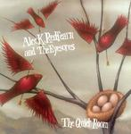

| Artist: | Alex K. Redfearn And The Eyesores |
| Title: | The Quiet Room |
| Label: | Cuneiform Records Rune 204 |
| Length(s): | minutes |
| Year(s) of release: | 2005 |
| Month of review: | [10/2005] |
| 1) | Simian Fanfare | 0.15 |
| 2) | The Night It Rained Glass On Union Street | 4.04 |
| 3) | The Bible Lite | 2.25 |
| 4) | Walking Sticks | 0.15 |
| 5) | Punjabi/Watery Grave | 7.48 |
| 6) | Morphine Drip | 1.10 |
| 7) | Bonaparte Crossing The Blood-Brain Barrier | 0.34 |
| 8) | The Smoking Shoes ('04) | 6.19 |
| 9) | Slo-mo | 3.14 |
| 10) | Coke Bugs | 2.57 |
| 11) | That Which Connect Your Flesh To The Floor | 0.08 |
| 12) | Portugese Man O'War | 3.11 |
| 13) | The Quiet Room | 4.26 |
| 14) | Bulgarian Skin Mechanic | 5.57 |
| 15) | Somnambulance | 1.49 |
Samples of The Quiet Room occur by kind permission of Cuneiform Records.
Walking Sticks is a short transition to the lengthy Punjabi/Watery Grave. This song has some mesmerizing, trippy guitars, playing in a high tempo. Again we hear the combination of the relatively frolic folk melodies and the Crimsonesque instrumentation (although more world music like than KC). The band can be compared to Paranoise, although this combo seems less rocking, more avant-garde and less serious. Although the ending of this tune is in essence rather shrill and fiddly, I do not mind so much since the pace keeps it going. In fact, the interjections on sax seem more like the environmental sounds and not part of the music.
Morphine Drip on the other hand reminds me of the modern American composers (ah well, what is modern?) which to me usually means something akin to the minimalist elements of Steve Reich. After yet another short, this time synth riddled tune, Bonaparte Crossing The Blood-Brain Barrier we arrive at The Smoking Shoes ('04). This again a more lengthy affair opening with noisy somewhat random synths. This is a very slow moving tune that reminds me a bit of Tom Waits in places. There are vocals, but not very audible ones. Slo-mo is a bit of a waltzy piece with some typically seventies rhythm guitar mixed into the back. Accordion again shows to be one of the leading instruments for this outfit. I do get the impression that this song simply goes on and on.
Things are getting more hectic in Coke Bugs. Squeaky rodents (or bugs as the title seems to suggest) scurry by, synthetically represented by a weird synth sounds. Along with that, an alarm is continually going off. A track to clear your house with (after a party, and you want to go to bad).
That Which Connect Your Flesh To The Floor connects Coke Bugs to Portugese Man O'War, an animal (plural if you like) I am not in favour of meeting any time soon. This is a relatively rhythmic piece in which the minimalism reenters the picture. Notwithstanding this is a relatively relaxed tune, rather vague even.
The Quiet Room is indeed a quiet track, more like dark ambient than anything else. A somber piece of work. Bulgarian Skin Mechanic is even more Balkan styled then what we have heard so far. Frolic accordion and violin are accompanied by heavy guitars, and the artists are working up a sweat. Halfway, the guitars go into dissonant mode, while the music rhythmically pounds on. Must be great to see this live.
Somnambulance is the closer, and a short one. The main ingredient is softly plucked...string bass?